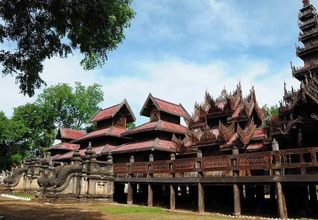

BAGAN
Bagan, an ancient city located in the Mandalay region is one of the most visited places by tourists in the country. The city served as the capital of Myanmar from the 9th to 13th centuries. It was the capital of the Pagan kingdom, the kingdom which unified regions that constitute the Myanmar of today. The Bagan Archaeological Zone is the main attraction of the country and is one of the richest archaeological sites in Southeast Asia. Situated on the eastern bank of the Ayeyarwady River, the temples of Bagan leaves one awestruck. Bagan has approximately 2000 ancient monuments and pagodas strewn all over Bagan. The monuments are located on the land between the river bank and the Turintaung range. Although Bagan is most famous for its historic monuments, it has a lot more to offer.
Popular Places

|
Dhammayangi Temple Bagan’s most massive temple, Dhamayangi Temple, was built by King Narathu in 1170 A.D. Although the temple construction has not been completed, it displays the finest brickwork and is worth a visit. |
|---|
Ananda Temple The Ananda Temple located in Bagan, Myanmar is a Buddhist temple built in 1105 AD during the reign (1084–1112/13) of King Kyansittha of the Pagan Dynasty. The temple layout is in a cruciform with several terraces leading to a small pagoda at the top covered by an umbrella known as hti, which is the name of the umbrella or top ornament found in almost all pagodas in Myanmar. The Buddhist temple houses four standing Buddhas, each one facing the cardinal direction of East, North, West and South. The temple is said to be an architectural wonder in a fusion of Mon and adopted Indian style of architecture. The impressive temple has also been titled the "Westminster Abbey of Burma".The temple has close similarity to the Pathothamya temple of the 10th–11th century, and is also known as “veritable museum of stones”. |
|---|
Sulamani temple Sulamani temple is situated one mile to the southeast of Bagan, beyond the Dhamayangyi temple. The highlight is an inscribed stone erected in the north porch mentioning that King Narapatisithu built it in 1183 A.D. |
|---|
Lawkananda Pagoda Lawkananda Pagoda is a stunning golden pagoda located on top of a small hill on the banks of the Ayeyarwady River. This pagoda was built by King Anawrahta in 1059 A.D. The breathtaking view of the sunset from the pagoda is not to be missed. Tourists can see a replica of a tooth relic of Gautama Buddha here which was obtained by the king from Sri Lanka. |
|---|
Mount Popa Mt. Popa is about 50 km to the Southeast of Bagan and takes about an hour and twenty minutes to drive. It is an extinct volcano covered with forest. It is a well-known pilgrimage site dotted with Nat (spirits) temples and relics. The panoramic view from the top of the rocky cliff is a memorable one. Tourists who like to engage in adventure can also hike to Mt. Popa. |

|
|---|
|  | Yoke Sone Monastery A small town, Sale is 55 miles away from Bagan. It is characterised by colonial buildings and the Yoke stone monastery built by the Kone Baung Dynasty and Man Paya, an antique Buddha statue made of bamboo. It is also an important centre for lacquerware manufacturing in Myanmar. |
|---|